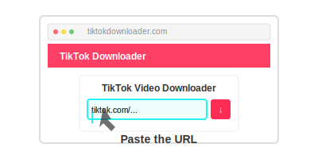

Open TikTok app or website and copy the URL of the photo slider you want to download.
Paste the copied URL into the input field above.
Click the download button and save all the images to your device.
Get all photos from a slider in a single download
Save images in their original high resolution
Our servers process your request in seconds
We don't store your images or personal information
A TikTok photo slider (also called a carousel) is a post that contains multiple images that users can swipe through. Our tool allows you to download all these images at once.
No, our tool can only download public TikTok photo sliders. Private content is not accessible through our downloader.
Yes, our TikTok slider downloader is completely free to use. There are no hidden charges or subscription fees.
Open the TikTok photo slider, tap on the share button, and select "Copy Link" to get the URL of the slider.
The images will be downloaded in their original format, typically JPG or PNG, and will be packaged in a ZIP file for convenience.